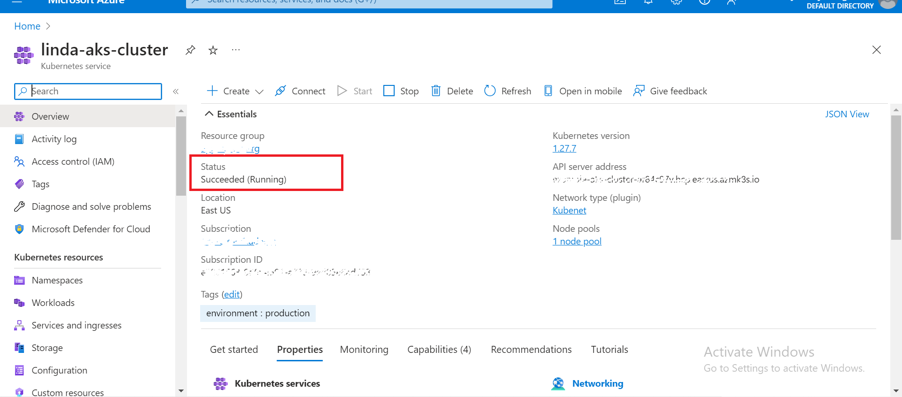

Welcome to my Terraform project showcase, where I'll walk you through the journey of automating infrastructure deployment using Terraform. In this project, I leverage the power of Infrastructure as Code (IaC) to streamline the provisioning and management of cloud resources, showcasing my expertise in DevOps engineering.
In today's fast-paced technology landscape, the ability to efficiently deploy and manage infrastructure is critical. With Terraform, I've embarked on a mission to simplify and automate this process, enabling organizations to scale their operations seamlessly.
Provisioning Cloud Resources: Utilizing Terraform's declarative syntax, I've automated the provisioning of cloud resources across various providers, including AWS, Azure, and Google Cloud Platform. From virtual machines and networking components to Kubernetes clusters Terraform empowers me to define infrastructure configurations with ease.
Embracing Terraform's modular architecture, I've organized my infrastructure code into reusable modules, promoting consistency and scalability. Whether deploying a single application stack or orchestrating complex multi-tier architectures, Terraform's modular approach enhances maintainability and facilitates collaboration.
.png)
.png)
Integrating Terraform with CI/CD pipelines, I've established automated workflows for infrastructure changes. Leveraging Jenkins, I ensure seamless testing, validation, and deployment of infrastructure updates, empowering teams to iterate rapidly and deliver value efficiently.
Adhering to best practices in Infrastructure as Code, I prioritize readability, version control, and documentation within my Terraform projects. With clear and concise code, comprehensive commit messages, and detailed READMEs, I strive to foster a culture of transparency and collaboration.
Interacting with my clusters
In conclusion, my Terraform project exemplifies the transformative power of automation in modern DevOps practices. By embracing Terraform as a cornerstone of infrastructure management, I empower organizations to accelerate innovation, mitigate risks, and achieve operational excellence in the cloud-native era.
Experience the magic of automated infrastructure deployment firsthand by exploring my Terraform project on GitHub Pages. Witness the artistry of code as it transforms cloud resources into orchestrated symphonies of efficiency and scalability.
Thank you for embarking on this Terraform journey with me. Together, let's shape the future of infrastructure automation and propel our organizations towards new heights of success.